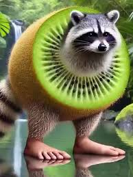
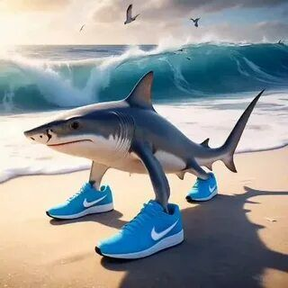
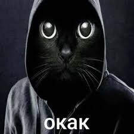
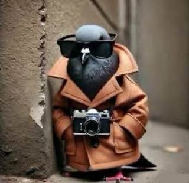
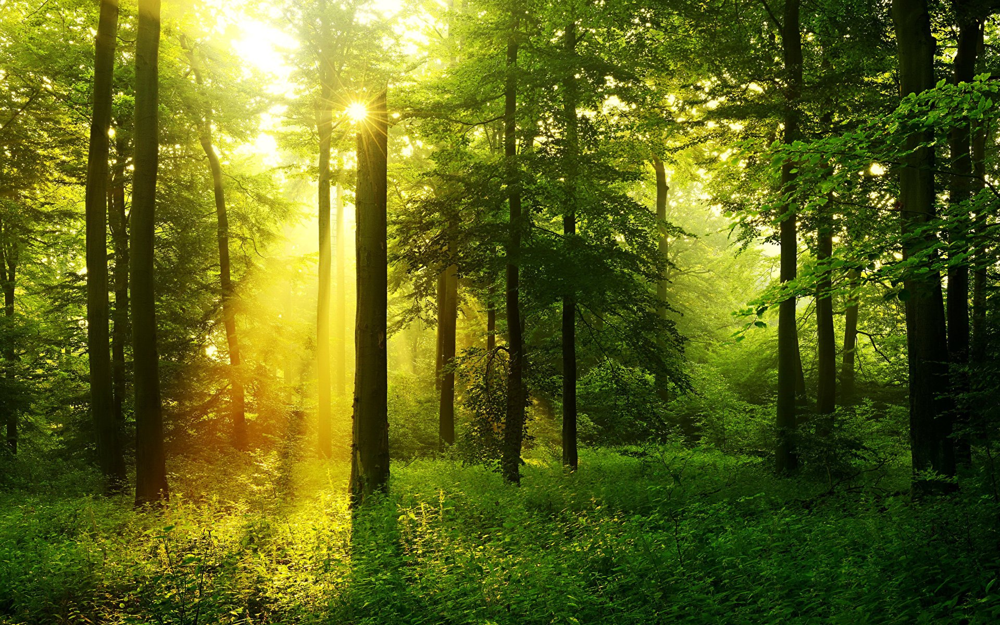

Несколько вариантов мемов, с которых смеются в ТДО 3.114.2.21

Рисунок 1: Pipikiwi.

Рисунок 2: Tralalela tralala.

Рисунок 3: Kotik Okak. Рисунок 4: Тина африканская - только для помещений с влажным климатом.

Рисунок 5: Олдскульные ковры ушли в прошлое вместе с СССР.

Рисунок 6: Фотопокрытия изображают природные склоны.